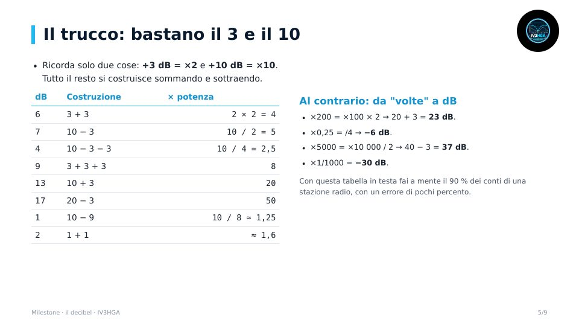
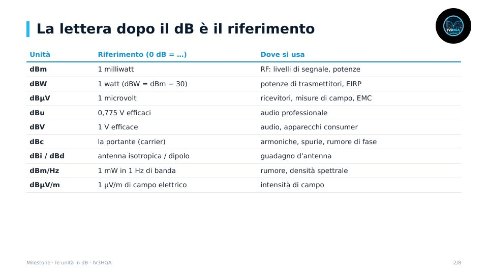
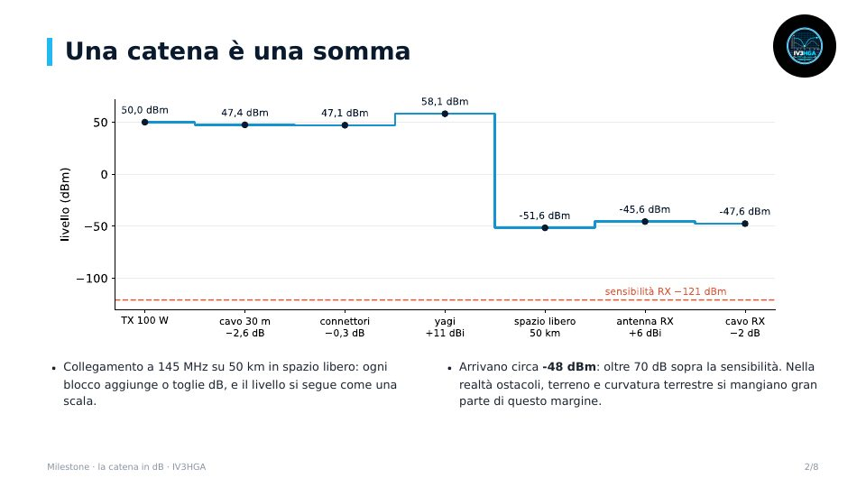
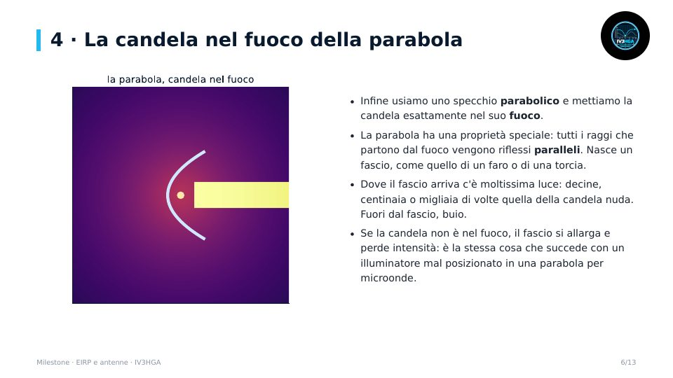

Milestone · Modulo 1
Il decibel: pensare in logaritmico
- Perché in radio si usano i decibel
- 10·log per le potenze, 20·log per le tensioni
- Il trucco: bastano il 3 e il 10
- Esempi da stazione, cosa si somma e cosa no, esercizi
Il linguaggio comune di tutto il corso: pensare in logaritmico, dBm, dBu e dBµV, la catena di trasmissione e l'EIRP spiegato con la candela di IW3SMV.



